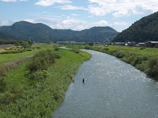
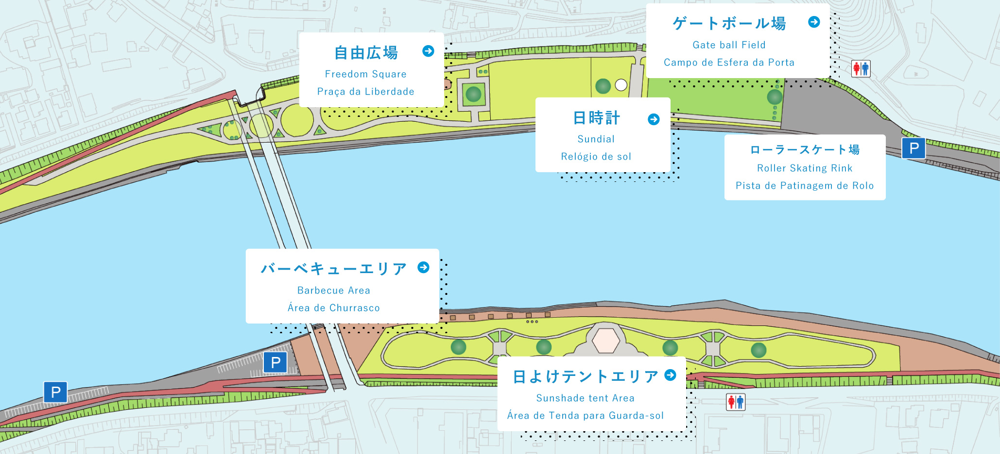

し ： 市をつなぐ 一級河川 日野川だ
一言でいうと？
越前市を流れるゆたかな川

日野川は南越前町の夜叉ケ池を水源とする川です。
越前市から福井方面へ向かって流れています。
一級河川とは？
流れている範囲が大きくて、生活に重要な川
「一級河川(いっきゅうかせん)」とは、川が流れている面積(分岐後も含めます)が大きい川の中で、安全面や生活に必要な水資源として国土交通省(こくどこうつうしょう)に認められた川のことをいいます。
ちなみに「二級河川(にきゅうかせん)」は、流れている面積が小さい中で重要度が高く、都道府県知事(とどうふけんちじ)が指定した川のことです。
橋はいくつ？
越前市内の橋は全部で8つ
・府中(ふちゅう)大橋…県道212号
・豊(ゆたか)橋…武生高校のそば
・万代(ばんだい)橋…第三中学校の近く、柱がある
・帆山(ほやま)橋…県道19号
・日野大橋
・武生大橋…国道８号
・ほがらか橋…県道136号
・日之出(ひので)橋
公園がある？
日野川河川緑地公園(ひのがわかせんりょくちこうえん)
となりにある村国山と日野川河川敷地の調和をはかることにより、水と緑に親しむ市民の憩いの場として整備された都市公園です。
主な施設としてイベント広場、BBQエリア、駐車場、芝生広場、自由広場、ゲートボール場、ローラースケート場、トイレ、園路などがあります。
▼公園内マップ

駅までの道のりで何度も見ていますし、母校のマラソン大会は日野川の周りをぐるっと走りました。台風が来ても特に氾濫も何もなく平和な川だなぁと思ったり…(近づくのは危ないのでやめましょう)